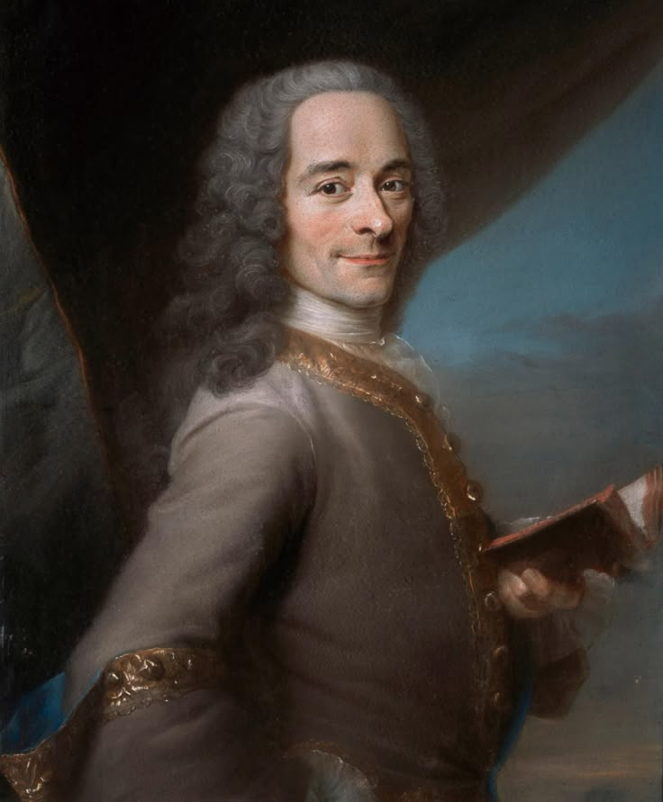

Who Was Voltaire?
Voltaire was the pen name of François-Marie Arouet (1694–1778), one of the most influential writers and philosophers of the European Enlightenment. A French author, historian, satirist, and public intellectual, Voltaire became famous for his criticism of religious intolerance, arbitrary authority, censorship, and intellectual dogmatism. His writings helped make philosophical ideas accessible to a much wider reading public.
Voltaire's philosophy was not presented as one systematic philosophical system in the manner of thinkers such as Descartes or Leibniz. Instead, his ideas appeared across essays, letters, histories, philosophical dictionaries, plays, poems, political writings, and fictional works. He used argument, satire, historical criticism, and literary storytelling to examine questions concerning reason, religion, morality, government, knowledge, and human society.
Voltaire became one of the defining figures of the French Enlightenment. His advocacy of religious tolerance, civil liberties, freedom of thought, and criticism of fanaticism made him an important voice in the development of modern European intellectual culture. His philosophy is therefore closely connected with the broader history of Enlightenment philosophy.
Voltaire: Quick Facts
- Full name — François-Marie Arouet
- Pen name — Voltaire
- Born — 1694, Paris, France
- Died — 1778, Paris, France
- Philosophical period — Enlightenment
- Tradition — French Enlightenment philosophy
- Major influences — John Locke, Isaac Newton, English constitutional thought, classical philosophy
- Major subjects — Religion, tolerance, reason, politics, morality, history, society, and human freedom
- Religious position — Deism
- Famous work — Candide
- Important philosophical work — Letters Concerning the English Nation (also known as Philosophical Letters)
- Important work on religion — Treatise on Tolerance
- Other major work — Dictionnaire philosophique
Voltaire's Early Life and Education

Voltaire was born François-Marie Arouet in Paris in 1694. He received an education at the Jesuit Collège Louis-le-Grand, where he studied literature, rhetoric, and classical authors. Although his education was strongly connected to the intellectual culture of the Catholic Church, Voltaire would later become one of the most prominent critics of religious intolerance and ecclesiastical authority in eighteenth- century Europe.
From an early age, Voltaire demonstrated an interest in literature, poetry, theatre, and public intellectual life. His sharp wit and satirical style eventually made him famous, but the same qualities repeatedly brought him into conflict with powerful political and religious institutions.
His experiences with censorship, imprisonment, and exile were important in shaping his intellectual outlook. Voltaire increasingly defended reason, civil liberty, freedom of expression, and religious tolerance while criticizing institutions that used political or religious authority to suppress intellectual disagreement.
Voltaire and the Enlightenment
Voltaire is one of the central figures of the European Enlightenment, an intellectual movement associated with the increasing use of reason, criticism, scientific inquiry, and historical scholarship to examine traditional beliefs and institutions. Voltaire believed that human beings should be willing to question inherited assumptions rather than accept them simply because they were supported by tradition or authority.
The Enlightenment philosophy associated with Voltaire was especially concerned with the practical consequences of intellectual freedom. He attacked superstition, fanaticism, censorship, and persecution while defending education and rational inquiry. His writings attempted to bring philosophical criticism into debates about law, religion, government, justice, and everyday social life.
Voltaire's Enlightenment thought was also international in character. His engagement with English philosophy and political institutions helped him present alternatives to aspects of French absolutism and religious intolerance. His work consequently became part of a wider European exchange of ideas about reason, liberty, science, and government.
What Was Voltaire's Philosophical Method?
Voltaire did not construct philosophy primarily through a single deductive system. Instead, his method combined reason, historical criticism, empirical observation, literary argument, and satire. He often approached a philosophical problem by examining its historical consequences and exposing contradictions within accepted beliefs.
This method allowed Voltaire to reach audiences beyond academic philosophy. A philosophical argument could appear in a letter, a fictional story, a historical essay, or a satirical dictionary entry. His literary style was therefore not separate from his philosophy; it was one of the principal ways through which he communicated philosophical criticism.
Voltaire's philosophy should consequently be understood as a form of public philosophy. He wanted philosophical reasoning to influence public attitudes toward intolerance, injustice, political authority, religious persecution, and intellectual freedom.
Voltaire's Philosophy of Reason
Reason occupies a central position in Voltaire's philosophy. He believed that rational criticism could help human beings distinguish defensible beliefs from superstition, prejudice, and unsupported authority. Reason did not mean that every question could be solved through abstract deduction; rather, it involved examining evidence, questioning assumptions, and resisting fanaticism.
Voltaire's use of reason was strongly connected with his criticism of dogmatism. He objected to situations in which individuals were punished merely for holding different religious or philosophical beliefs. For Voltaire, a society capable of rational discussion should permit disagreement instead of treating intellectual difference as a crime.
His commitment to reason also influenced his approach to history and science. He admired intellectual progress and believed that superstition and ignorance could be reduced through education, scientific inquiry, and critical examination of traditional claims.
Was Voltaire a Deist?
Yes. Voltaire was a deist, although his religious outlook was distinctive and cannot simply be reduced to disbelief in God. Voltaire generally believed in a rational creator or supreme intelligence while rejecting many doctrines and institutions that he regarded as unsupported by reason or responsible for intolerance.
Voltaire's deism was influenced in part by the intellectual environment of the Enlightenment and by his engagement with English thinkers. He believed that observation of the natural world could provide reasons for accepting a form of belief in a creator, while rejecting the need to explain nature through constant appeals to miracles or supernatural interventions.
His deism therefore occupied a position between orthodox Christianity and atheism. Voltaire criticized organized religion and clerical power very strongly, but he did not conclude that belief in God was necessarily irrational. His famous religious criticism must therefore be understood as criticism of fanaticism and institutional intolerance rather than as a simple rejection of all religion.
Voltaire's Philosophy of Religion
Voltaire's philosophy of religion focused on the relationship between religious belief, reason, morality, and social institutions. He questioned religious doctrines that appeared inconsistent with reason and attacked the use of religious authority to justify persecution, censorship, and violence.
At the same time, Voltaire believed that religion could have a useful moral and social function. His criticism was therefore directed particularly toward fanaticism, intolerance, and institutional abuse. He considered belief in a supreme moral intelligence compatible with a rational understanding of the world.
Voltaire's approach created an important distinction between religion and religious fanaticism. A person might believe in God while still opposing persecution carried out in the name of religion. This distinction became an important feature of his Enlightenment philosophy of religion.
Why Did Voltaire Defend Religious Tolerance?
Religious tolerance is one of the most important themes in Voltaire's philosophy. He believed that people should not be persecuted simply because they belonged to a different religious community or held different religious opinions. Religious diversity, in his view, made tolerance especially important for social peace.
Voltaire was deeply influenced by cases in which religious prejudice contributed to legal injustice. His writings repeatedly returned to the dangers of fanaticism and the tendency of institutions to treat disagreement as evidence of moral or political guilt.
His defense of tolerance was therefore both philosophical and practical. Voltaire argued that a society in which people are allowed to practice different religions and express different beliefs is less likely to descend into sectarian violence. Religious tolerance became one of the clearest expressions of his Enlightenment commitment to civil liberty.
Voltaire and Freedom of Speech
Voltaire is strongly associated with the Enlightenment defense of freedom of expression. His own experiences with censorship and political authority made intellectual liberty an important concern throughout his career. He believed that writers and thinkers should be able to criticize institutions and debate ideas without automatically facing persecution.
Voltaire's position should not be reduced to the modern slogan sometimes attributed to him about defending another person's right to speak. That famous wording was written by a later biographer rather than by Voltaire himself. Nevertheless, Voltaire's writings clearly contain a sustained defense of intellectual freedom, religious tolerance, and opposition to censorship.
His broader philosophy of expression was connected with his belief that reason develops through disagreement and criticism. If authorities prevent individuals from questioning accepted beliefs, errors become harder to expose. Freedom of thought was therefore closely connected with Voltaire's wider Enlightenment project.
Voltaire's Criticism of Religious Fanaticism
Voltaire regarded religious fanaticism as one of the greatest threats to social peace and rational thought. He argued that fanaticism could transform religious disagreement into persecution, violence, and political oppression.
His criticism was particularly directed toward the conviction that one's own religious beliefs justify forcing those beliefs upon others. Voltaire believed that human beings possess limited knowledge and therefore have little justification for treating disagreement as a reason for violence.
This criticism appears throughout his writings on religion and tolerance. Voltaire's argument was not simply that religious belief was false, but that religious certainty combined with political power could become socially destructive. This distinction is important for understanding his philosophy of religion.
Voltaire's Treatise on Tolerance
Treatise on Tolerance (Traité sur la tolérance), published in 1763, is one of Voltaire's most important works on religious tolerance and justice. The book was written in the context of the Jean Calas affair, in which a Protestant family became involved in a notorious case of religious prejudice and judicial controversy.
Voltaire used the case to criticize religious intolerance and to argue for greater fairness in the administration of justice. Rather than treating religious difference as evidence of guilt, he insisted on reasoned investigation and tolerance.
The Treatise on Tolerance became an important Enlightenment text because it connected philosophical criticism with a concrete problem of law and social justice. It demonstrates how Voltaire used historical events to develop broader arguments about religious freedom, reason, and human society.
What Was Voltaire's Political Philosophy?
Voltaire's political philosophy emphasized civil liberties, legal reform, religious tolerance, education, and opposition to arbitrary persecution. He was highly critical of absolutist abuses and institutions that exercised authority without adequate rational or legal justification.
However, Voltaire was not a straightforward advocate of modern democracy. He sometimes expressed admiration for enlightened monarchs and believed that an educated ruler could introduce reforms more effectively than an uninformed population. His political thought therefore combined strong support for civil liberties with a degree of skepticism toward mass political participation.
This makes Voltaire's political philosophy different from later democratic theories. His central political concerns were often practical: reducing arbitrary power, improving laws, encouraging education, protecting religious minorities, and creating conditions under which reason could flourish.
Voltaire and John Locke
John Locke was one of the most important English thinkers to influence Voltaire. Voltaire admired aspects of Locke's empiricism, political thought, and arguments concerning religious toleration. His encounter with English intellectual culture helped strengthen his criticism of certain features of French political and religious institutions.
Locke's philosophy of knowledge argued that human understanding is connected with experience rather than being filled with innate ideas from birth. Voltaire was attracted to this emphasis on experience and observation, although he did not simply reproduce Locke's philosophy.
The connection between Voltaire and Locke is especially important for understanding the international character of Enlightenment philosophy. English empiricism, political institutions, and debates about toleration became resources through which Voltaire developed his own French Enlightenment arguments.
Voltaire and Isaac Newton
Isaac Newton was another major influence on Voltaire's intellectual outlook. During his engagement with English culture, Voltaire became an important popularizer of Newtonian science in France. He regarded Newton's mathematical description of nature as a powerful example of what rational and scientific inquiry could accomplish.
Newtonian physics also influenced Voltaire's understanding of the relationship between science and religion. The orderly structure of nature could, in his view, support a rational belief in a creator without requiring reliance upon traditional theological explanations for every natural event.
Voltaire's interest in Newton illustrates the connection between Enlightenment philosophy and the Scientific Revolution. For Voltaire, scientific knowledge represented an important challenge to superstition and intellectual dogmatism and demonstrated the value of observation, mathematics, and rational investigation.
Voltaire's Philosophical Letters
Letters Concerning the English Nation, commonly known as Philosophical Letters, was published in 1734 and became one of Voltaire's important works introducing English intellectual and political culture to French readers.
The book discusses English religion, politics, philosophy, science, and literature. Voltaire used English examples to encourage French readers to reconsider their own institutions and intellectual traditions. His discussions of Locke and Newton were particularly important in spreading English philosophical ideas within France.
The Philosophical Letters therefore occupy an important place in the history of Enlightenment thought. They show Voltaire using comparative intellectual history as a tool for criticizing political and religious institutions at home.
Voltaire's Candide and the Problem of Optimism
Candide, published in 1759, is Voltaire's most famous work of philosophical fiction. The short novel follows Candide through a series of wars, disasters, injustices, and personal tragedies. Behind its comic and satirical style lies a serious philosophical criticism of excessive optimism.
The novel is particularly concerned with the claim associated with Leibniz that the existing world is the best of all possible worlds. Voltaire does not simply present a technical philosophical refutation of Leibniz. Instead, he uses extreme suffering and absurd events to ask whether abstract optimism can adequately explain the reality of human suffering.
Candide therefore illustrates Voltaire's preferred philosophical method. Instead of writing only a formal argument, he turns a philosophical dispute into a memorable literary narrative. The novel encourages readers to question empty optimism and to focus on practical action, work, and improvement of human circumstances.
Voltaire's Criticism of Philosophical Optimism
Voltaire's criticism of philosophical optimism is closely connected with his experience of war, natural disaster, religious persecution, and political injustice. He questioned whether human suffering could reasonably be explained as part of a perfectly ordered world.
The 1755 Lisbon earthquake became particularly important in European debates about providence and suffering. For Voltaire, catastrophic events raised difficult questions about attempts to explain every tragedy as necessary or ultimately beneficial.
His criticism did not mean that Voltaire believed human life was completely without value. Instead, he emphasized the limits of human knowledge and encouraged people to respond to suffering through practical efforts to improve their lives and societies. This practical orientation is central to the philosophical message of Candide.
Voltaire's Philosophy of Morality and Ethics
Voltaire's ethical philosophy emphasized practical morality, compassion, justice, and the reduction of human suffering. He was skeptical of moral systems that depended entirely on theological authority and instead explored whether moral principles could be understood through reason and human social experience.
Voltaire believed that people living together in society require standards of justice and mutual respect. Religious differences should not prevent individuals from cooperating morally. In this sense, Voltaire's ethics is closely connected with his philosophy of tolerance.
His moral thought was also practical rather than purely theoretical. The purpose of philosophy was not simply to construct an abstract theory of virtue but to encourage conduct that reduced cruelty, persecution, and injustice. This practical dimension appears throughout his historical, literary, and political writings.
Voltaire's View of Human Nature
Voltaire had a relatively skeptical view of human beings. He did not assume that people naturally behave according to perfect rationality or morality. Human beings are capable of reason, but they are also influenced by prejudice, self-interest, passion, ignorance, and social institutions.
This view helps explain why Voltaire placed so much importance on education and institutions. If human beings are vulnerable to superstition and fanaticism, societies need intellectual and legal structures that discourage persecution and encourage rational discussion.
Voltaire therefore combined skepticism about human behavior with confidence in the possibility of improvement. Education, scientific knowledge, legal reform, and greater tolerance could help societies reduce some of the harms produced by ignorance and fanaticism.
Voltaire's Philosophy of History
Voltaire was also an important contributor to the development of Enlightenment philosophy of history. Rather than writing history solely as a record of kings, battles, and political events, he increasingly examined customs, science, economics, religion, literature, and everyday social life.
His Essay on the Manners and Spirit of Nations attempted to present a broad history of human civilization. Voltaire compared different cultures and historical periods and paid attention to the development of human knowledge and social institutions.
This approach helped expand the meaning of historical inquiry. History could become a means of examining how human societies develop and why institutions such as religion, government, law, and culture change over time.
Voltaire's Dictionnaire philosophique
The Dictionnaire philosophique, first published in 1764, collected short alphabetical entries addressing subjects including religion, morality, history, philosophy, politics, and science. The dictionary format allowed Voltaire to move rapidly between different intellectual questions.
Voltaire used irony, satire, historical examples, and philosophical criticism throughout the work. Rather than presenting a single systematic doctrine, the entries encourage readers to question conventional assumptions and examine controversial subjects from different perspectives.
The work is especially important for understanding Voltaire's public philosophy. His philosophical writing was designed not only for specialists but also for educated readers interested in religion, society, morality, science, and political life.
Major Works of Voltaire
Voltaire produced an enormous body of literary, historical, philosophical, and political writing. His works frequently combine philosophy with satire and historical criticism, making them important sources for understanding eighteenth-century intellectual culture.
- Candide — A philosophical satire criticizing excessive optimism and examining suffering, human responsibility, and practical action.
- Treatise on Tolerance — A major argument for religious tolerance and against fanaticism and persecution.
- Philosophical Letters — A discussion of English religion, politics, philosophy, science, and culture.
- Dictionnaire philosophique — A collection of philosophical and critical entries addressing religion, morality, history, politics, and science.
- Essay on the Manners and Spirit of Nations — A broad work of Enlightenment history examining cultures, institutions, and civilization.
- Zadig — A philosophical tale exploring fate, justice, suffering, and the limits of human understanding.
Voltaire's Main Philosophical Ideas
1. Reason Against Fanaticism
Voltaire believed that rational inquiry could challenge superstition, prejudice, and fanaticism. Reason was particularly important when religious or political authority attempted to suppress disagreement.
2. Religious Tolerance
Voltaire argued that people should not be persecuted because of their religious beliefs. Religious tolerance was essential for peaceful coexistence and civil society.
3. Deism and a Rational Creator
Voltaire generally accepted a deistic belief in a supreme creator while rejecting many traditional theological doctrines and criticizing institutional religious power.
4. Freedom of Thought
Voltaire defended intellectual freedom and criticized censorship. He believed that societies benefit when individuals can question established beliefs and institutions.
5. Practical Improvement
Voltaire was skeptical of abstract philosophical systems that ignored actual human suffering. His writings repeatedly emphasize practical reform, education, justice, and the improvement of social conditions.
6. Criticism of Excessive Optimism
Through Candide and other writings, Voltaire challenged the idea that every event in the world must be understood as part of a perfectly good or rational order.
Voltaire and Other Enlightenment Philosophers
Voltaire belonged to a generation of thinkers who transformed European intellectual culture, but his philosophy differed from other Enlightenment philosophers in important ways. His emphasis on religious tolerance, criticism of fanaticism, and popular philosophical writing gave his work a distinctive public character.
His relationship with John Locke and Isaac Newton was especially significant because he helped introduce English empiricism, political ideas, and Newtonian science to French audiences. His relationship with Rousseau, however, was much more complicated, with significant disagreements concerning religion, society, and culture.
Voltaire's criticism of Leibniz is particularly visible in Candide, where he satirizes the philosophical optimism associated with the claim that this is the best of all possible worlds. These relationships place Voltaire within a broader network of Enlightenment debates rather than as an isolated thinker.
Voltaire's Influence and Legacy
Voltaire's influence extended far beyond eighteenth-century France. His arguments for religious tolerance, criticism of fanaticism, opposition to arbitrary authority, and defense of intellectual freedom became important elements of modern European intellectual history.
His writings also influenced debates about civil liberties and the relationship between religion and government. Voltaire's work helped establish the idea that public intellectuals could criticize powerful institutions and use philosophy to address concrete problems of justice and social reform.
His legacy is nevertheless complex. Voltaire's political views were not identical to modern democratic liberalism, and his writings sometimes contain attitudes that modern readers rightly criticize. Understanding his historical context is therefore essential. His lasting importance lies particularly in his contribution to debates about tolerance, reason, criticism, and intellectual freedom.
Voltaire's Philosophy Explained Simply
Voltaire can be understood as an Enlightenment thinker who believed that human beings should use reason to challenge fanaticism, superstition, injustice, and arbitrary authority. He did not create one complete philosophical system. Instead, he used essays, satire, history, fiction, and philosophical criticism to examine the problems of his society.
- What did Voltaire believe about God? Voltaire generally believed in a rational creator and is commonly described as a deist.
- Why did Voltaire criticize religion? He strongly criticized religious fanaticism, persecution, superstition, and institutional abuses while still defending a rational belief in God.
- Why was tolerance important to Voltaire? He believed religious and intellectual tolerance could reduce persecution and social conflict.
- What did Voltaire think about optimism? He questioned the idea that all events are ultimately for the best, especially in light of suffering and natural disasters.
- Why is Candide important? Candide uses satire to examine optimism, suffering, philosophical speculation, and the need for practical action.
Frequently Asked Questions About Voltaire
Who was Voltaire?
Voltaire was the pen name of François-Marie Arouet, a French Enlightenment writer, philosopher, historian, and satirist who lived from 1694 to 1778. He became famous for defending religious tolerance, intellectual freedom, and criticism of fanaticism.
What was Voltaire's philosophy?
Voltaire's philosophy emphasized reason, religious tolerance, intellectual freedom, criticism of fanaticism, deism, legal reform, and practical improvement of human society. His ideas were expressed across philosophical essays, histories, letters, fiction, and satire.
Was Voltaire an Enlightenment philosopher?
Yes. Voltaire was one of the most influential philosophers and public intellectuals of the European Enlightenment, particularly within the French Enlightenment tradition.
Was Voltaire a deist?
Yes. Voltaire is generally classified as a deist because he believed in a rational creator while rejecting many traditional theological doctrines and strongly criticizing religious fanaticism.
What did Voltaire believe about religion?
Voltaire believed that religion should not become a justification for persecution or violence. He criticized fanaticism and institutional abuses while maintaining a rational belief in God.
Why did Voltaire support religious tolerance?
Voltaire believed that people should not be persecuted for their religious beliefs. He regarded religious tolerance as essential for social peace, justice, and civil liberty.
Did Voltaire believe in freedom of speech?
Voltaire strongly defended freedom of thought and opposed censorship and intellectual persecution. Although the famous modern quotation about defending another person's right to speak is not actually written by Voltaire, his works clearly defend intellectual and religious liberty.
What is Voltaire famous for?
Voltaire is famous for his Enlightenment philosophy, criticism of religious intolerance, defense of tolerance and intellectual freedom, advocacy of Newtonian science, and works such as Candide, Treatise on Tolerance, and Dictionnaire philosophique.
What is Voltaire's most famous book?
Voltaire's most famous literary-philosophical work is Candide, a satirical novel that examines optimism, suffering, human behavior, and the relationship between philosophical theories and real life.
What did Voltaire think about Candide and optimism?
In Candide, Voltaire satirized excessive philosophical optimism, particularly the claim that the existing world must be the best possible world. He used suffering and absurdity to question attempts to justify every tragedy as ultimately necessary or good.
What was Voltaire's political philosophy?
Voltaire supported legal reform, civil liberties, religious tolerance, education, and opposition to arbitrary persecution. He was not a straightforward modern democrat and sometimes favored enlightened monarchy as a practical means of reform.
What did Voltaire think about religious fanaticism?
Voltaire regarded religious fanaticism as dangerous because it could transform differences of belief into persecution and violence. He argued that reason and tolerance were necessary safeguards against fanaticism.
What was Voltaire's relationship with John Locke?
Voltaire admired important aspects of John Locke's philosophy, particularly his empiricism and writings on religious tolerance. Locke became an important influence on Voltaire's understanding of English philosophy and intellectual freedom.
How did Isaac Newton influence Voltaire?
Voltaire admired Newtonian science and helped popularize Newton's scientific ideas among French readers. Newton's physics reinforced Voltaire's confidence in rational investigation and scientific explanations of nature.
Why is Voltaire important in the history of philosophy?
Voltaire is important because he helped bring Enlightenment philosophy into public debates about religion, politics, law, science, and society. His defense of tolerance and criticism of fanaticism became especially influential in modern intellectual history.
Related Enlightenment and Modern Philosophers
Explore other major thinkers connected with Enlightenment philosophy, modern philosophy, empiricism, rationalism, political thought, and eighteenth-century intellectual history.
Related Areas of Philosophy
Voltaire's philosophy connects Enlightenment thought with ethics, political philosophy, philosophy of religion, epistemology, social philosophy, freedom of expression, and the history of modern philosophy.
Why Voltaire Still Matters
Voltaire remains one of the most important figures in the history of Enlightenment philosophy because he transformed philosophical criticism into a powerful form of public intellectual activity. His writings challenged religious fanaticism, censorship, arbitrary authority, and intellectual dogmatism while defending reason, tolerance, and civil liberty.
His philosophy was not a single systematic doctrine. Instead, Voltaire used history, satire, fiction, letters, and philosophical essays to examine the problems of religion, politics, morality, science, and society. Works such as Candide and the Treatise on Tolerance demonstrate how philosophical ideas can be connected with concrete questions about human suffering, justice, and social life.
Understanding Voltaire also helps explain the wider development of modern philosophy. His engagement with Locke and Newton, his debates with other Enlightenment thinkers, and his defense of religious tolerance contributed to an intellectual environment in which reason, criticism, freedom of thought, and reform became increasingly important ideals in European thought.
Explore Great Philosophers